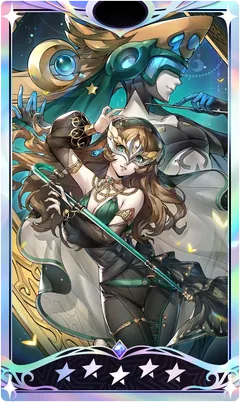

PHOEBE Yumi Shiina
Fonte: https://lufel.net/en/character/phoebe/ · letto il 2026-11-15 con il browser integrato (spoiler attivi) · Stato Global: rilasciata. Convenzione: nomi di skill, awareness, armi, Persona, set e stat lasciati in inglese come su lufel.net; condizioni ed effetti tradotti in italiano. Valori skill = LV10 / LV10+Minds 5 / LV13 / LV13+Minds 5. Valori armi = refinement R0/R1/R2/R3/R4/R5/R6.
Scheda#
| Campo | Valore |
|---|---|
| Nome | Yumi Shiina |
| Codename | PHOEBE |
| Persona | Urania |
| Rarità / tipo | 5★ · Standard (permanente) |
| Elemento | Buff (Navigator/Elucidator, nessun elemento d'attacco) |
| Posizione | Elucidator |
| Ruolo (lufel) | non indicato |
| Tag (lufel) | Attack · Damage Mult · Crit Rate |
| Resistenza / Debolezza | non indicate (Elucidator) |
| Mindscape Core | sì (KR V4.7) |
Character Review (lufel)#
- Phoebe è un'Elucidator che fornisce un potente bonus al danno elementale, tanto più preziosa quanti più alleati condividono il suo elemento.
- Ogni volta che un alleato esegue un attacco elementale, ottiene 1 stack di quell'elemento e, raggiunti 3 stack, prepara un Cocktail. Più stack dello stesso elemento si raccolgono, più alta è la qualità del Cocktail prodotto.
- Anche se viene creato un Cocktail di bassa qualità, se ne può portare uno al livello massimo con la Skill 2, e la Skill 3 può aumentare notevolmente il danno di un elemento specifico.
- La sua arma esclusiva non solo aumenta l'ATK ma ha anche un effetto che può alterare l'ordine dei turni, quindi vale la pena investirci.
- Come prima Elucidator 5★, a differenza delle 4★ che condividevano il 15% delle proprie stat con gli alleati, lei condivide il 20%, rendendo le sue stat ancora più importanti.
- Essendo dipendente dai Cocktail, ad Awareness 6 il limite di Cocktail passa da 3 a 4 bicchieri, con un impatto significativo.
- L'espansione LV100 rafforza la sua identità premiando i party costruiti attorno a elementi coincidenti: se ogni personaggio tranne Wonder inizia la battaglia con lo stesso elemento, il team ottiene +20% Pierce.
- Detto ciò, far coincidere l'elemento di tutti i membri non è molto comune, e questo buff da solo non basta a superare le meccaniche delle Elucidator più recenti.
- I bonus ad Attack e danno critico per le altre Elucidator concessi tramite Mindscape Amplification sono da prioritizzare, perché migliorano anche il supporto in scala con le stat che lei fornisce.
Pro - Fornisce un Damage Mult. molto alto. - Aumenta le stat dei membri del party in base alle proprie. - Offre effetti aggiuntivi come drenaggio HP e recupero SP.
Contro - Ha una meccanica molto complessa da capire. - Richiede alleati dello stesso elemento per prestazioni ottimali.
Recommended Setup (lufel)#
Nota lufel: le impostazioni consigliate sono basate su contenuti futuri; alcune funzioni potrebbero non essere ancora disponibili (Revelation, Mindscape, ecc.).
- Revelation — Space: Integrity (tooltip "Integrity - Labor": se equipaggiata da Navigator Thieves, aumenta HP, ATK e DEF di tutti gli alleati di un ulteriore 2% per ogni alleato dello stesso elemento) · oppure Trust (tooltip "Trust - Power": all'inizio della battaglia aumenta l'Attack degli altri membri del party del 10%, non attivabile ripetutamente) · Sun/Moon/Star/Sky: Labor (2-Set: HP +12% · 4-Set: se equipaggiato da Navigator Thieves, HP, ATK e DEF di tutti gli alleati +8%) · oppure Power (2-Set: proprio Attack +12% · 4-Set: proprio Attack +10% ogni 6 turni (contano i turni di nemici e alleati), fino a 3 stack)
- Main Options — Sun: HP · Moon: Attack · Star: Attack · Sky: Attack
- Sub Options — 1ª priorità: Attack · 2ª: Crit Rate / Crit Mult · 3ª: Damage Mult / Pierce Rate
- Recommended Stats — LV10: Attack 4600 · LV10+Minds 5: Attack 5060 · LV13: Attack 5980 · LV13+Minds 5: Attack 6440
- Battle Entry + — Thieves Den 50LV +65 · Thieves Den 70LV +110 (o più) · Thieves Den Rating
- Priorità skill — 1º Skill 3 · 2º Skill 1 · 3º Skill 2 (tutte MAX) · Highlight: "-" (gli Elucidator non hanno Highlight)
- Mindscape (LV 5) — Rank Strengthening 1: HP 20% · Rank Strengthening 2: Attack 20% · Skill Enforce 1: Skill1 / Skill2 · Skill Enforce 2: Skill3
- Skill Rotation — A0: - › 3 › 2 › 3 › 1
- Notes (lufel) — Prepara i Cocktail in base all'attributo del team all'inizio della battaglia, quindi usa la prima Persona di Wonder · Il funzionamento cambia in base al numero di azioni dell'arma esclusiva e al party.
Skills (LV10 / LV10+Minds 5 / LV13 / LV13+Minds 5)#
Skill 1 — Tempting Build (cooldown 6 azioni alleate) Aumenta l'Attack del party dell'8.7% dell'Attack di Yumi per 3 turni (fino a 4600/5060/5980/6440 di Attack). Quando un alleato usa una skill, spende 1 Cocktail per potenziare gli effetti di quella skill. I Cocktail di qualità più alta vengono usati per primi. I Cocktail Tailor-Made, Standard e Basic aumentano gli effetti della skill rispettivamente del 120%, 100% e 50%. Cooldown: 6 azioni alleate.
Skill 2 — Enchanting Stir (cooldown 4 azioni alleate) Aumenta il danno di 1 alleato dell'1% ogni 230 di Attack di Yumi (fino a 4600/5060/5980/6440 di Attack) e i suoi HP massimi del 13.0%/13.0%/14.6%/14.6% per 2 turni. Quando il bersaglio infligge danno a un nemico, ripristina i suoi HP del 2% del danno inflitto per 1 turno. Attivando la skill, spende 1 Cocktail Basic o Standard per ottenere 1 Cocktail Tailor-Made. Cooldown: 4 azioni alleate.
Skill 3 — Invigorating Blend (cooldown 8 azioni alleate) Spende tutti i Cocktail per aumentare il danno di attributo del party in base all'attributo dell'alleato bersaglio per 2 turni. Il danno di attributo aumenta dell'1% ogni 230 di Attack di Yumi (fino a 4600/5060/5980/6440 di Attack). Ogni Cocktail Tailor-Made, Standard e Basic speso modifica questo effetto rispettivamente del 120%, 100% e 50%. Questi effetti sono moltiplicati per 1.2 per l'alleato bersaglio. Se vengono spesi 2+ Cocktail Standard o migliori, aumenta anche il danno critico dell'alleato bersaglio del 20.0%/22.0%/22.4%/24.4%. Cooldown: 8 azioni alleate (la skill richiede Cocktail).
Stat Buff (passiva da Elucidator): aumenta i valori di attributo corrispondenti di tutti gli alleati schierati del 20% dei rispettivi attributi del Phantom Thief.
Passiva — Cocktail Party: aumenta il danno di attributo del party del 4% in base agli attributi principali dei membri del party.
Passiva — Taking Orders: all'inizio della battaglia ottiene 3 Mixer, in base all'attributo più comune tra gli alleati in battaglia.
Awareness#
- A0 — Expert Bartender (talento base): quando un alleato infligge danno con skill, Resonance, Highlight o Theurgy, Yumi ottiene 1 stack di Mixer dell'attributo corrispondente. Dopo aver ottenuto 3 stack di Mixer, li trasforma in un Cocktail (massimo 3). Se i 3 Mixer hanno lo stesso attributo, crea un Cocktail Tailor-Made; se 2 sono uguali, un Cocktail Standard; se sono tutti e 3 diversi, un Cocktail Basic. Quando Yumi usa una skill, spende stack di Cocktail per attivare vari effetti per il party e ripristina 8 SP a tutti gli alleati.
- A1 — Mojito: ottenendo un Cocktail, ottiene casualmente 1 stack di Mixer tra gli attributi spesi. Attivando Tempting Build o Invigorating Blend, spende 1 Cocktail Basic o Standard per ottenere 1 Cocktail Standard o Tailor-Made.
- A2 — Screwdriver: ottenendo un Cocktail, danno del party +16% per 2 turni.
- A3 — Martini: aumenta di 3 i livelli di skill di Enchanting Stir e Invigorating Blend.
- A4 — Bloody Mary: quando un alleato usa Highlight o Theurgy, il suo Attack aumenta del 10% per 1 turno. Inoltre ottiene 1 Cocktail Tailor-Made.
- A5 — Old Fashioned: aumenta di 3 il livello di skill di Tempting Build.
- A6 — XYZ: il numero massimo di stack di Cocktail sale a 4. All'inizio della battaglia ottiene 1 Cocktail Tailor-Made; ogni 3 Cocktail ottenuti, ottiene 1 Cocktail Tailor-Made in più. Spendendo un Cocktail Tailor-Made, Standard o Basic per attivare una skill, l'effetto della skill passa da 120%/100%/50% a 135%/120%/75% (include Tempting Build, Invigorating Blend e Moonlit Banquet).
Stats#
- Base (LV1): HP 307 · ATK 98 · DEF 53 · Speed 100
- Hidden Ability LV7: ATK % 29%
- LV80 (HP / ATK / DEF): A0 3450 / 1110 / 607 · A1 3512 / 1130 / 618 · A2 3574 / 1150 / 628 · A3 3636 / 1170 / 639 · A4 3699 / 1190 / 651 · A5 3760 / 1210 / 661 · A6 3823 / 1230 / 672
- LV100 (HP / ATK / DEF): A0 4071 / 1373 / 751 · A1 4149 / 1398 / 765 · A2 4226 / 1423 / 778 · A3 4304 / 1448 / 792 · A4 4382 / 1473 / 806 · A5 4459 / 1498 / 819 · A6 4537 / 1523 / 833
Armi esclusive (valori R0/R1/R2/R3/R4/R5/R6)#
5★ Moonlit Feather — HP 2279 · ATK 733 · DEF 401 — passiva Wine & Revelry - Aumenta l'Attack del 30.0%/30.0%/39.0%/39.0%/48.0%/48.0%/57.0%. - Per ogni Cocktail speso, concede casualmente al party 1 dei seguenti effetti: Attack +6.0%/7.8%/7.8%/9.6%/9.6%/11.4%/11.4% (2 turni) · danno +4.0%/5.2%/5.2%/6.4%/6.4%/7.6%/7.6% (2 turni) · Crit Rate +5.0%/6.5%/6.5%/8.0%/8.0%/9.5%/9.5% (2 turni). Questi effetti non si cumulano. - Se il Cocktail speso era Tailor-Made, l'effetto è moltiplicato per 120%; se Standard, per 100%; se Basic, per 50%. - Ogni 2 Cocktail ottenuti, riduce di 1 turno il cooldown di Yumi.
4★ Starrynight Soothsayer — HP 1823 · ATK 587 · DEF 320 — passiva Seductive Kiss - Aumenta l'Attack del 12.0%/12.0%/16.0%/16.0%/20.0%/20.0%/24.0%. - Dopo aver usato una skill, danno del bersaglio principale +4.8%/6.0%/6.0%/7.2%/7.2%/8.4%/8.4% per 2 turni. - Se la skill spende Cocktail, danno +3.6%/4.5%/4.5%/5.4%/5.4%/6.3%/6.3% in più.
Attribute Mindscape (lufel: introdotto in KR V5.2, forse non ancora su Global)#
- Mindscape Synergy — Damage Increase (consigliata): aumenta il danno dell'8.0%/16.0%.
- Mindscape Combat Skill — Critical Damage Boost (consigliata): all'inizio della battaglia aumenta permanentemente il danno critico (Crit Mult) di tutti gli alleati del 7.5%/15.0%.
Mindscape Core (lufel: introdotto in KR V4.7; sbloccandolo si può raggiungere il LV100)#
- Mindscape Amplification (×100): Attack +10% a tutti gli Elucidator Phantom Thieves.
- Mindscape Amplification (×100): CRIT Mult +12% a tutti gli Elucidator Phantom Thieves.
- Blending (×24): all'inizio della battaglia, per ogni alleato dello stesso attributo (escluso WONDER), gli alleati di quell'attributo ottengono Attack +15.0%/22.5%/30.0%. Se il party ha 3 / 2 alleati dello stesso attributo, gli alleati ottengono inoltre Pierce +10.0%/15.0%/20.0% / +4.0%/6.0%/8.0%. Quando Yumi ottiene un Cocktail, il party riceve il buff corrispondente per 2 turni, fino a 3 stack: Tailor-Made: Damage Bonus +5.0%/7.5%/10.0% · Standard: Damage Bonus +2.5%/3.8%/5.0% · Basic: Damage Bonus +1.3%/1.9%/2.5%.
- Fermentation (×24): la potenza di skill ottenuta consumando un Cocktail Tailor-Made aumenta di un ulteriore 1.5%/2.3%/3.0% + livello di Awareness × 3%.
Recommended Combination (lufel)#
- Sezione non presente nella pagina lufel di questo personaggio (Elucidator).
Recommended Parties (lufel)#
Nota lufel: la maggior parte degli esempi di party è stata scritta attorno all'uscita KR/CN del personaggio; Thieves o Mindscape Core successivi potrebbero non essere considerati. Solo riferimento. - Lineup — nessuna nota di lineup nella pagina. - Party d'esempio — CHERISH / FOX / YUKI / PHOEBE · CLOSER·Tropical / MARIAN / LEON / PHOEBE · CHORD / QUEEN / VINO / PHOEBE · FOX / CHERISH / YUKI / PHOEBE · NOIR / MOKO·Seaside / CHORD / PHOEBE
Nomenclatura#
- lufel: "Yumi Shiina" (codename PHOEBE), slug URL
phoebe. Stati/risorse: Mixer, Cocktail (Tailor-Made / Standard / Basic). L'A6 cita "Moonlit Banquet", nome non presente altrove nella pagina (riportato come su lufel). - Nelle descrizioni lufel "critical rate" = Crit Rate, "critical damage" = Crit Mult.